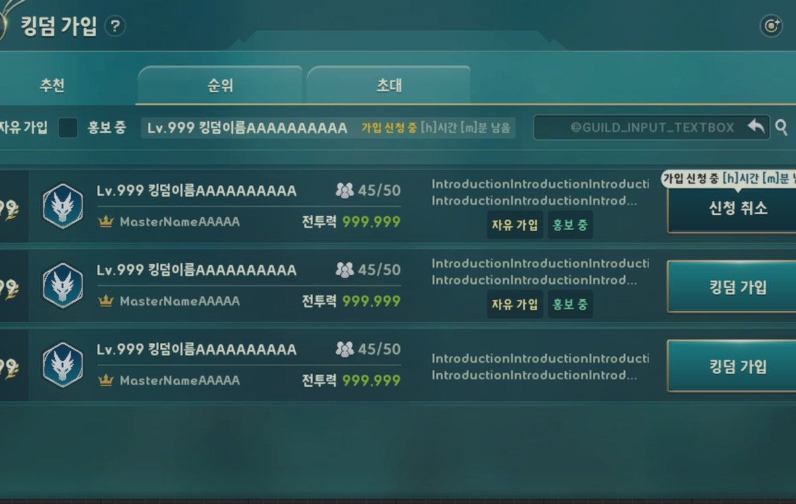
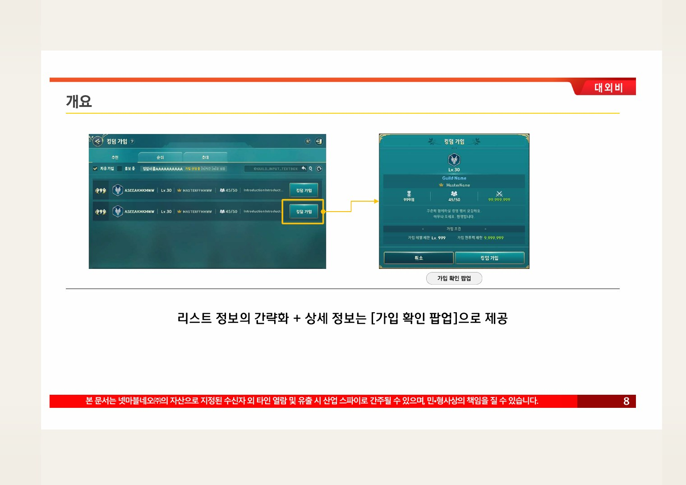
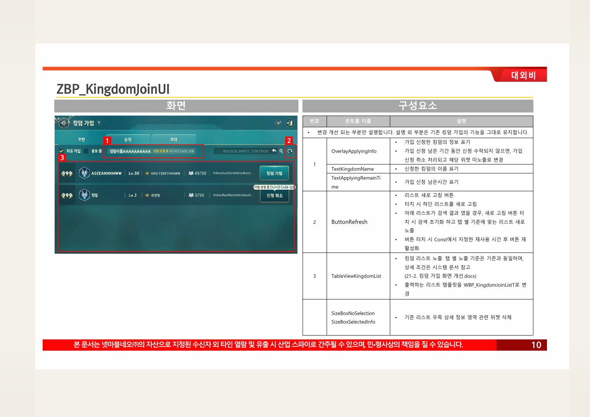
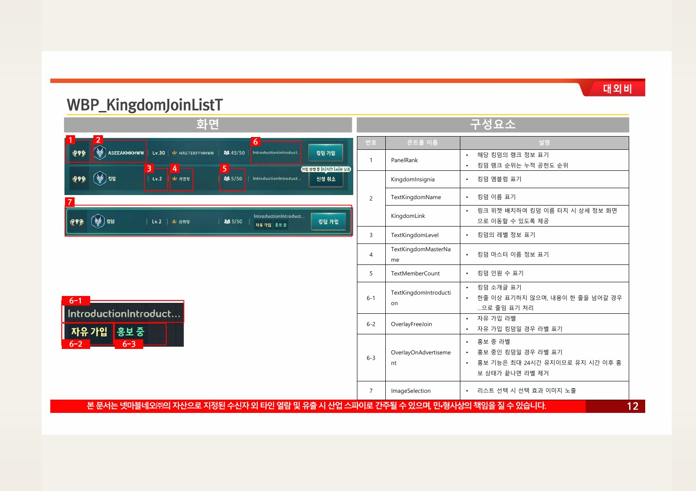
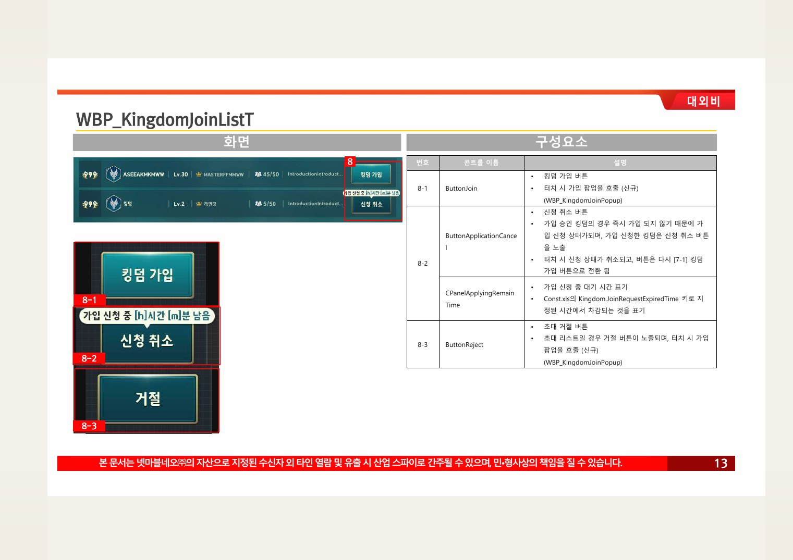
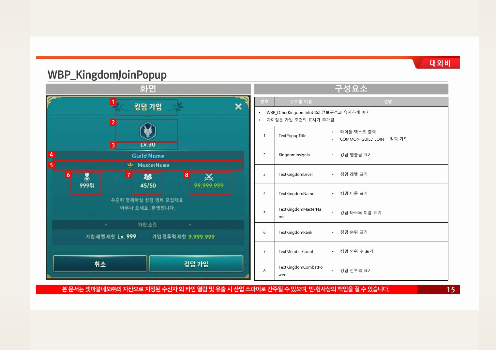
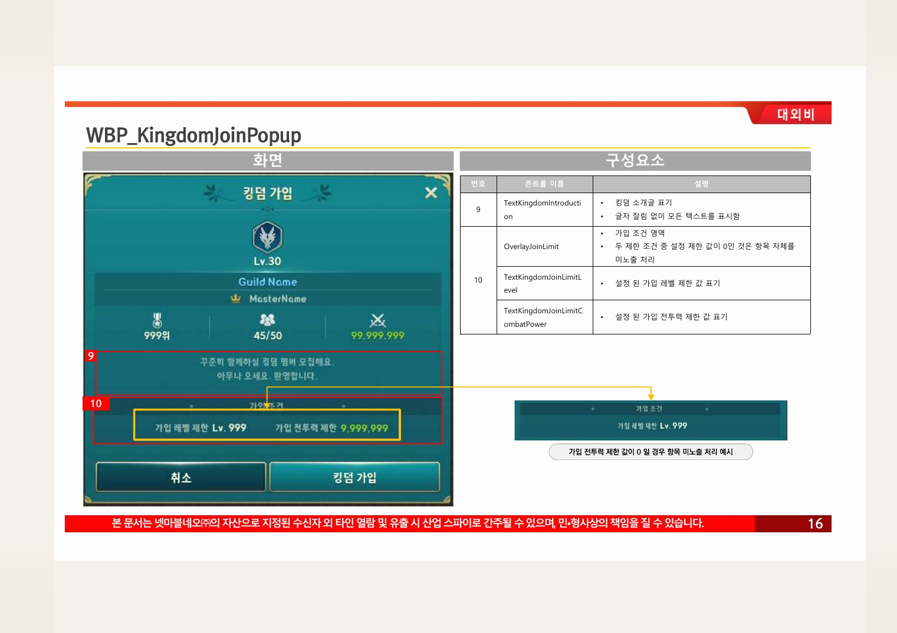
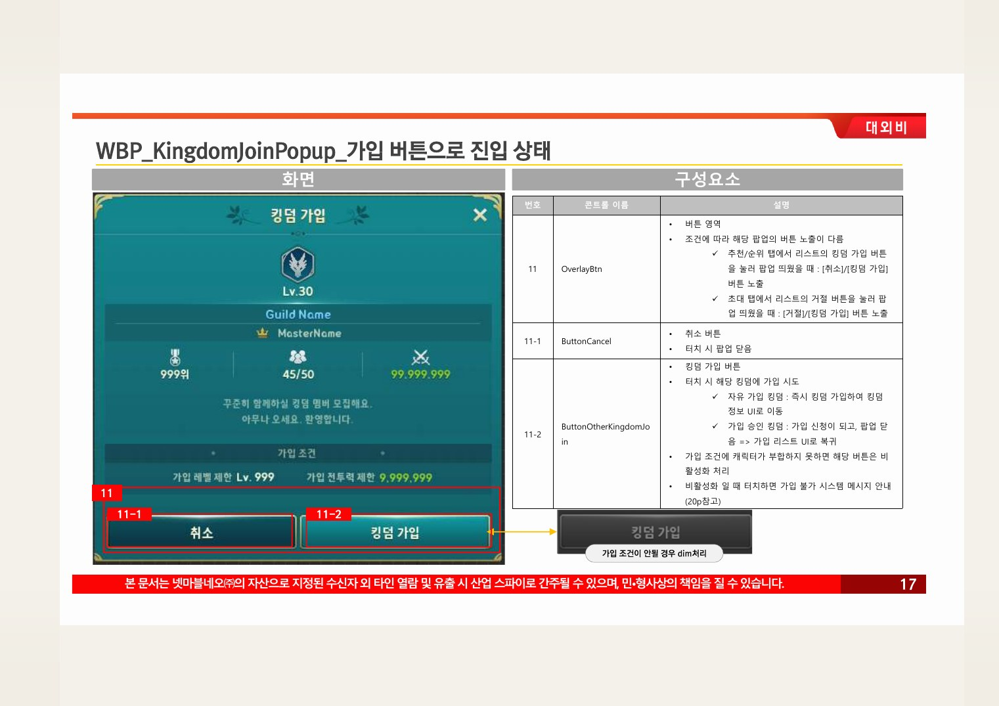
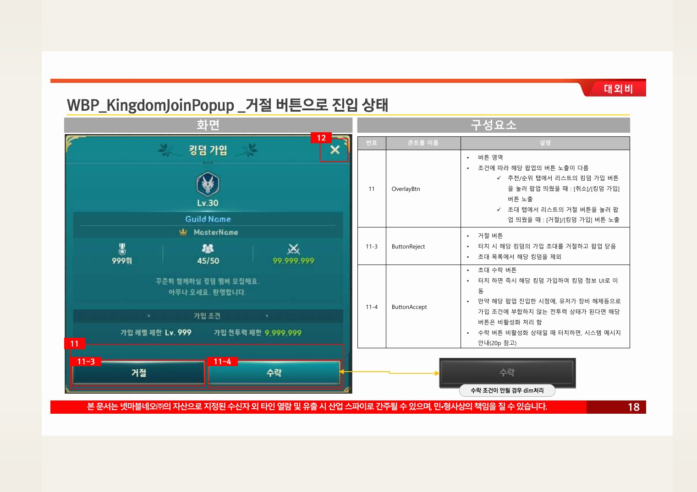

Planning Context
어떤 기획이었나
- 킹덤은 가입 전 탐색, 가입 신청, 출석, 기부처럼 유저 상태에 따라 화면 목적이 크게 달라집니다.
- 반복 사용 콘텐츠는 정보 위계와 버튼 상태가 명확하지 않으면 매일 사용하는 흐름에서 피로도가 쌓입니다.
ProjectN · Kingdom UX
킹덤 가입, 출석, 기부, 창설 연출 등 소셜 시스템의 진입과 반복 사용 흐름을 정리한 사례입니다.

Planning Context
Process
Deliverables
Result
소셜 시스템의 가입 전/후 상태와 반복 사용 기능을 구분해 화면 기준을 정리했습니다.
Deliverable Captures
원본 문서는 포함하지 않고, 포트폴리오 확인용으로 일부 페이지만 이미지화했습니다. 슬라이드 마스터/상하단 영역은 흐림 처리했습니다.







